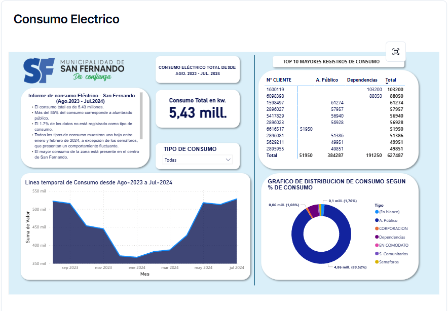
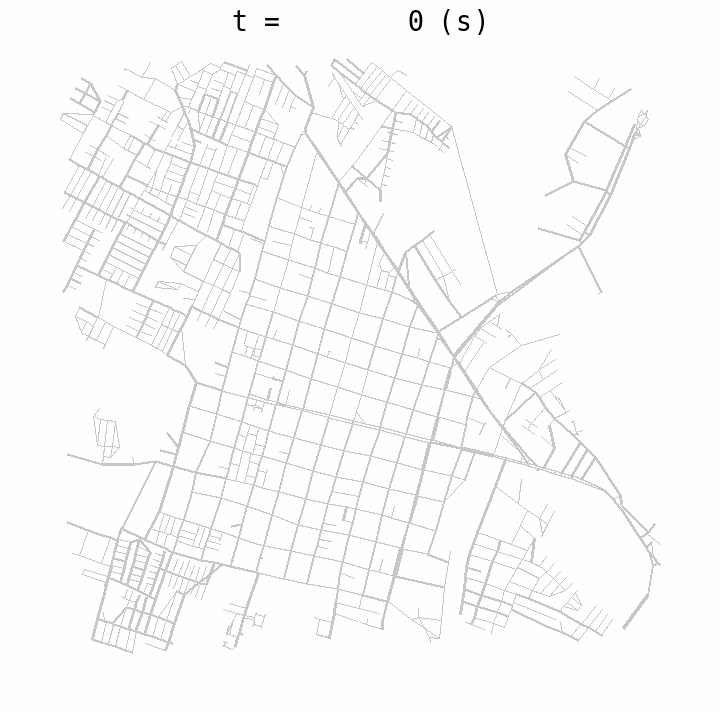
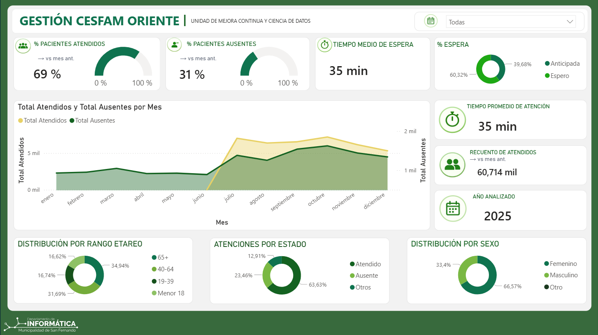
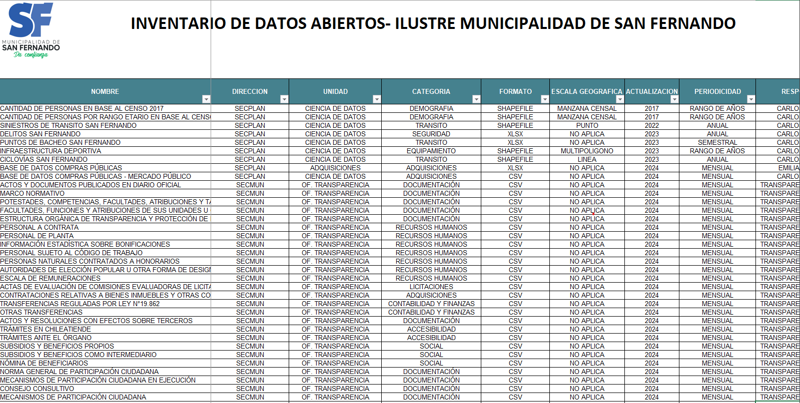
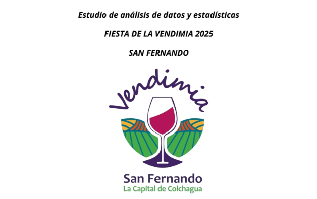

Una ciudad, vista desde su energía.
Análisis del consumo eléctrico de San Fernando entre agosto de 2023 y julio de 2024, presentado en un dashboard interactivo.
INGENIERÍA CIVIL INDUSTRIAL · CHILE
De los datos a las
mejores decisiones.
Conecto análisis de datos, procesos y tecnología para resolver problemas reales y encontrar oportunidades de mejora.
01 / TRABAJO SELECCIONADO
DEL ANÁLISIS A LA APLICACIÓNUna selección de trabajos en visualización, gestión pública y modelación. Cada proyecto, una forma de convertir información en algo útil.

Análisis del consumo eléctrico de San Fernando entre agosto de 2023 y julio de 2024, presentado en un dashboard interactivo.

Modelo macroscópico de predicción de tráfico para San Fernando, desarrollado con UXSIM para explorar el comportamiento de su red vial.

Análisis de tiempos de espera y nivel de atención del CESFAM Oriente de San Fernando.

Apoyo en la gestión y ejecución de un inventario de datos de la Municipalidad de San Fernando.

Apoyo al análisis del festival mediante estadística inferencial para aportar información a la toma de decisiones.

Análisis de la percepción de asistentes a la feria libre de San Fernando, en la Región de O’Higgins.
02 / DETRÁS DE LOS DATOS
Me interesa lo que ocurre cuando los datos, los procesos y las personas se conectan.
Mi formación en Ingeniería Civil Industrial en la Universidad de O’Higgins me llevó a encontrar en la analítica y la optimización una manera concreta de resolver problemas.
Trabajo con herramientas de análisis, visualización y desarrollo para entender la información, comunicarla con claridad y apoyar decisiones. Mi experiencia incluye proyectos aplicados a la gestión municipal en San Fernando.
Fuera de la pantalla, el deporte me ha enseñado disciplina y constancia. Y Bella, mi Yorkshire Terrier, me recuerda que siempre hay tiempo para una pausa.
03 / CÓMO PUEDO APORTAR
PENSAMIENTO ANALÍTICO. EJECUCIÓN PRÁCTICA.Combino una mirada de ingeniería con herramientas digitales para abordar los desafíos desde distintos ángulos.
Explorar, limpiar y presentar información para reconocer patrones y comunicar hallazgos que apoyen decisiones.
Comprender cómo funciona una operación, identificar cuellos de botella y explorar oportunidades de automatización y mejora continua.
Conectar el análisis con soluciones digitales, combinando programación y herramientas de desarrollo.
Formación complementaria
EN PALABRAS DE QUIENES HAN TRABAJADO CONMIGO
El joven Tom es una persona comprometida y con concepto de equipo; es un joven que da lo mejor de sí en cumplir cada tarea asignada.
El chico Tom es un joven con gran disposición, enfocado en trabajar por objetivos.
Un profesional que sabe afrontar desafíos y ofrecer soluciones innovadoras.
EL SIGUIENTE PASO EMPIEZA CON UNA CONVERSACIÓN
Si buscas un perfil que conecte ingeniería, datos y tecnología, me gustaría conocer tu proyecto u oportunidad laboral.
tomas.ingenieriaindustrial@gmail.com